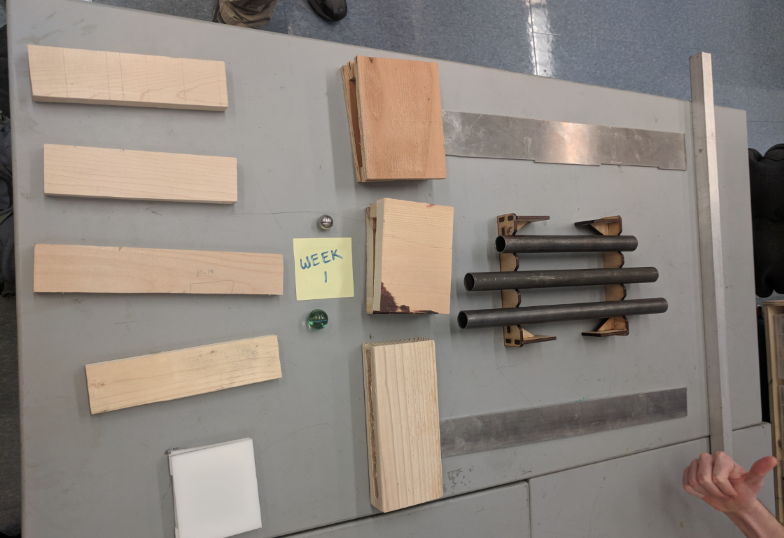
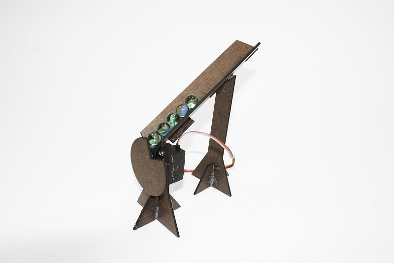

Goal:
Create a machine that plays music using marbles, inspired by the Wintergatan marble machine
- Capable of playing any song
- Aesthetically pleasing and mechanically complex
- (and eventually) stores songs using mechanical memory
Sprint 1
Target Deliverables
- Find a viable musical instrument
- Find a viable marble dropping mechanism
- Construct a working prototype capable of playing songs with multiple notes
In order to play nice music we need a nice instrument. We decided make, not buy, an instrument in order to both reduce cost to us and as a fun challenge. At the beginning, we weren’t sure what material would be best, so we manufactured a range of possible instruments and rated them on their cost, pitch, and timbre.
We decided on metal pipes for our notes because of their high marks in every category we tested

Additionally, we experimented with the actuation that causes the dropping of the marbles. For this sprint we tested using a stepper to control both when a marble drops and where the marble goes.
As you can see our device is not much yet, with only 2 notes and a slow servo motor, but we accomplished our sprint goals of exploring the materials for making notes and testing out some actuation.